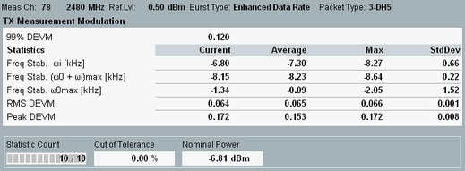

The measurement view shows an overview of statistical results.

- "99% DEVM": DEVM value below which 99% of all measured DEVM values occur. A 99% DEVM value of 0.016 means that 99% of all measured DEVM values are below or equal to 0.016.
- "Freq. Stability ωi": Initial carrier frequency error measured within the GFSK-modulated header of the Bluetooth packet.
- "Freq. Stability (ω0 + ωi)max": Maximum overall frequency error within a 50-symbol block in the DPSK portion of the packet, including the initial frequency error ωi.
(ω0 + ωi)max = ω0, m + ωi, where m = arg maxn ∈ {1, ..., no. of blocks}(|ω0, n + ωi|) - "Freq. Stability ω0max": Maximum frequency error within a 50-symbol block in the DPSK portion of the packet, excluding initial frequency error ωi.
ω0 max = ω0, m, where m = arg maxn ∈ {1, ..., no. of blocks}(|ω0, n|) - "RMS DEVM": Maximum RMS DEVM for a 50-symbol block within the DPSK portion of the packet.
RMS DEVM = max(RMS DEVMn), n = 1 ... no. of blocks - "Peak DEVM": Maximum DEVM measured over all payload symbols:
Peak DEVM = max(peak DEVMn), n = 1 ... no. of blocks - "Nominal Power": Average burst power during the carrier-on state, measured in the "Enhanced Data Rate Filter Bandwidth".
The calculation of the frequency stability is in line with test purpose (TP) TP/TRM/CA/BV-11-C (EDR carrier frequency stability and modulation accuracy) in the test specification for Bluetooth wireless technology.
- The entire DPSK portion of the packet is compensated for the initial carrier frequency error ωi. The measurement includes also the symbols S1 to S10 of the synchronization sequence and the CRC.
- The DPSK portion is then partitioned into non-overlapping blocks of 50 symbols.
- A (compensated) frequency error ω0, n and RMS DEVMn value is calculated for each block no. n. The measurement follows the procedure in appendix C of the core specification for EDR for Bluetooth wireless technology.

To be valid the DPSK results require a minimum payload length of 6 (2-DHx packets) or 11 (3-DHx packets), corresponding to one complete 50-symbol block.
See also: "Modulation Accuracy"
For additional screen elements, refer to "Common View Elements".
Additional results in automatic detection mode If automatic burst detection is active ("Input Signal > Detection Mode: Auto"), the "Modulation Scalars" view also shows the detected packet type, and payload length. In "ACP 79 Channels" mode, the number of off slots is displayed in addition. Automatic detection mode is indicated in the upper right corner. |
For query of the results via remote control, see "Modulation Measurement Results (EDR)".